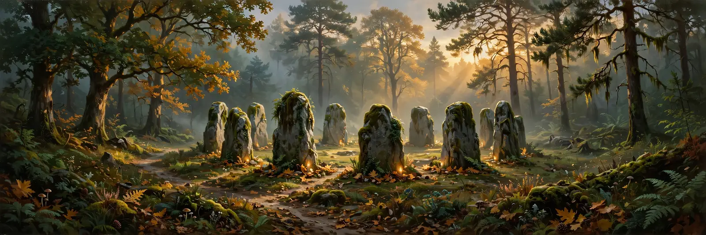
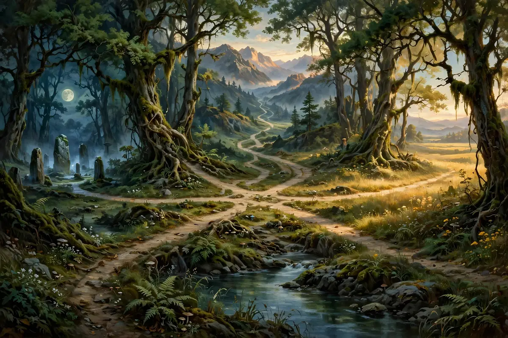
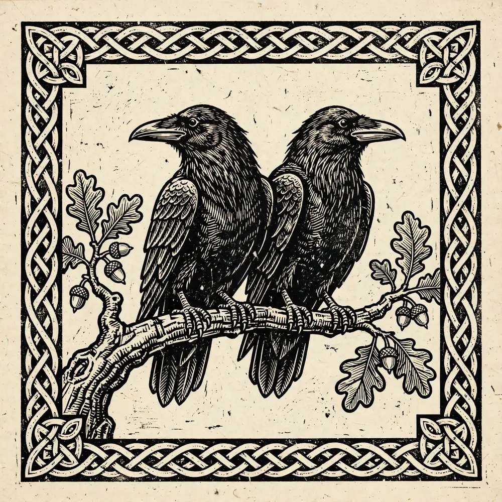

Many paths through the grove
Seven honest introductions to the traditions that meet here — Heathenry, Wicca, Druidry, Celtic, Hellenic, Kemetic, and the solitary paths.

A home on the web for pagans of every kind — Heathen and Wiccan, Druid and Hellenist, the coven-raised and the solitary, the lifelong practitioner and the person who just felt something stir on a walk in the woods. Come as you are. The fire is already lit.
“Pagan” is not one religion. It is a grove of many paths — and every path through it is walked by real people, in good faith.
Under this one word live earth-honoring traditions old and new: the Norse and Germanic ways, Wicca and witchcraft, Druidry, the gods of Greece and Egypt and Ireland, and countless folk practices carried quietly in families and kitchens. Some of us worship many gods, some one, some none at all — some honor the turning earth itself as sacred enough.
This site exists for all of us. You will not find a ranking of paths here, or a creed to sign. You will find the shared calendar that turns beneath most of our feet, honest introductions to each other's traditions, old wisdom worth carrying, and simple practices anyone can begin with — today, with nothing but a candle, a walk, and their attention.
New here and unsure how a word sounds? Pronunciations sit right beside the words that need them — for example, SamhainSOW-in, BlótBLOHT, and HávamálHAH-vah-mahl. No one in this grove will ever fault you for learning out loud.

The grove keeps a small reading room for the curious — the paths we walk, the books worth your time, short practices to try, and the words you'll hear along the way. Take your time; there is no hurry on any of these roads.
Seven honest introductions to the traditions that meet here — Heathenry, Wicca, Druidry, Celtic, Hellenic, Kemetic, and the solitary paths.
The books the grove trusts — a Norse shelf, and starting points for the other paths.
Fifteen short practices, most about five minutes, to begin where you stand.
The words you'll hear along the way, with pronunciations sitting right beside them.
This grove is not just pages to read — it is people. Two gathering places are open now, both free, both for adults (18+). Come as you are, lurk as long as you like, and speak when you are ready.
Our fireside room: eleven rooms to wander — daily practice, rune study, altar photos and artwork, festival talk — plus the grove-fire voice channel for sitting together in companionable quiet. New members start in the commons, and the Keeper team keeps it welcoming. Lurk as long as you like; no one has to introduce themselves to belong.
The same grove, on Facebook: introductions, shared photos, and conversation for those who already live there. All paths welcome, all posts moderated with a light hand.
Each month the grove takes up one question together — this month: what are you grateful for, and what are you carrying into the dark half of the year? Answers live in the Discord commons.
Recipes, altar ideas, artwork, photographs, a practice that works for you — the grove grows by what its people bring. Send a recipe or a design through the share forms, or post it straight to the Discord.
Music, books, tools, and good finds the grove genuinely likes — recommendations, not ads. Starting with a Wytheville rock band and a Pulaski pet store, and growing by your suggestions.

Our shop, OpenGroveGoods on Etsy, carries original woodcut-style Norse designs — carved-look prints made by the hands behind this grove. Each design comes on T-shirts, hoodies, mugs, and tote bags, printed to order when you ask for one. New: three Odin's Ravens designs, drawn from the old poems.
Tees start at $24.99, hoodies at $42.99, mugs at $14.99, and totes at $19.99. Every order is handled through Etsy — browsing costs nothing, and the ravens would love the company.
A free guide — everything you need to start practicing, in one place: the turning year, a first altar, a daily practice, the runes, and a first month to walk through it all. Leave your email and the guide is on its way to your inbox.
Free to keep, share, and print. No spam, and you can leave anytime. More about the guide →
One letter a week: the tradition we are learning, a short practice to try, and what is new in the grove — new designs included, when there are any. No spam, and you can leave anytime.
—
—